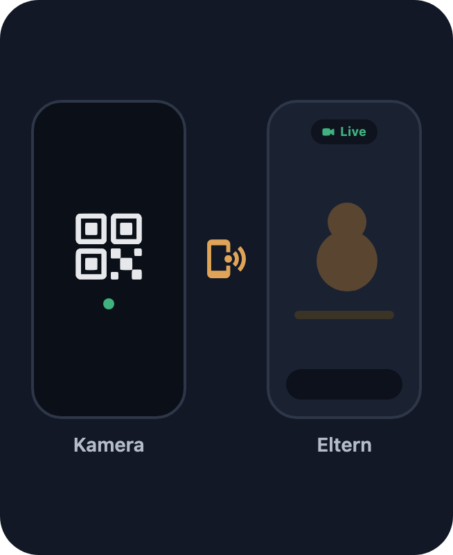
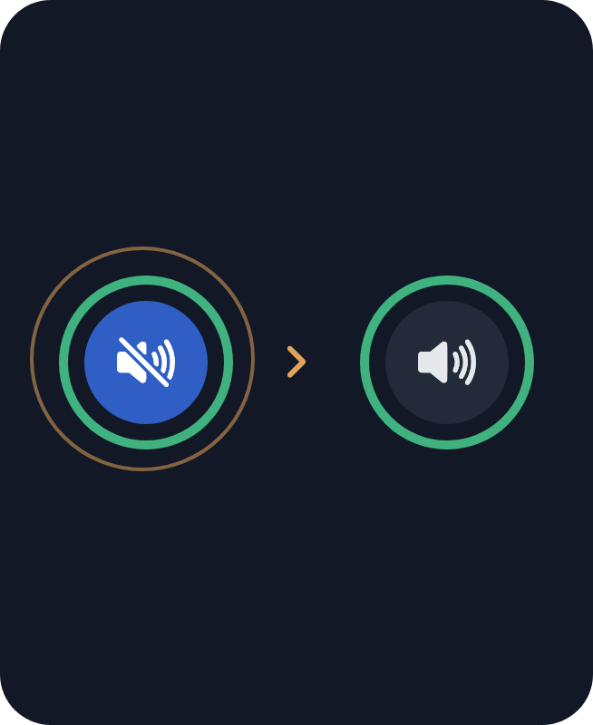
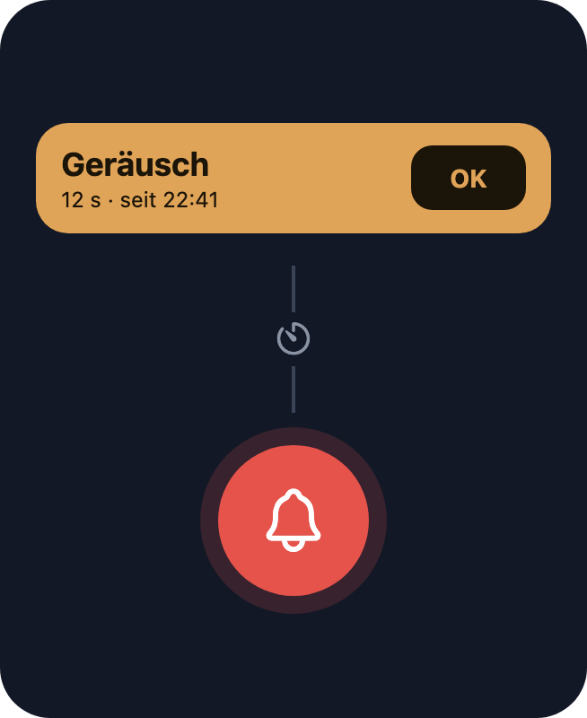
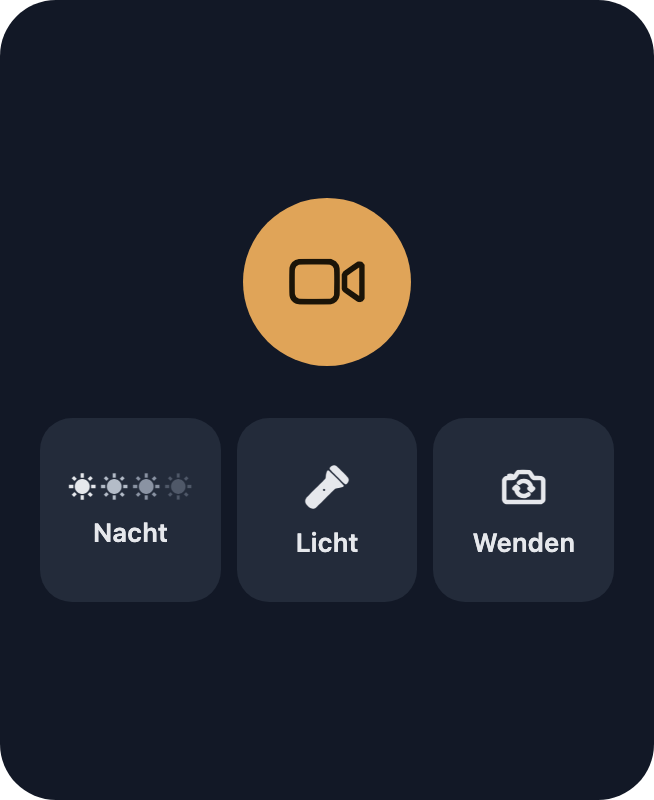
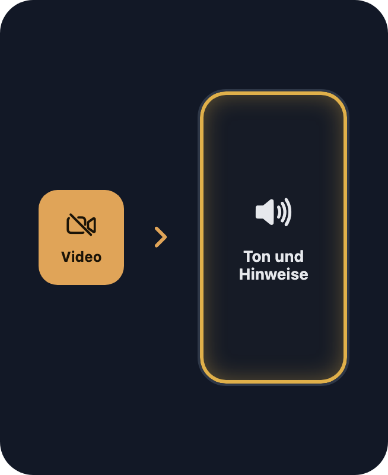
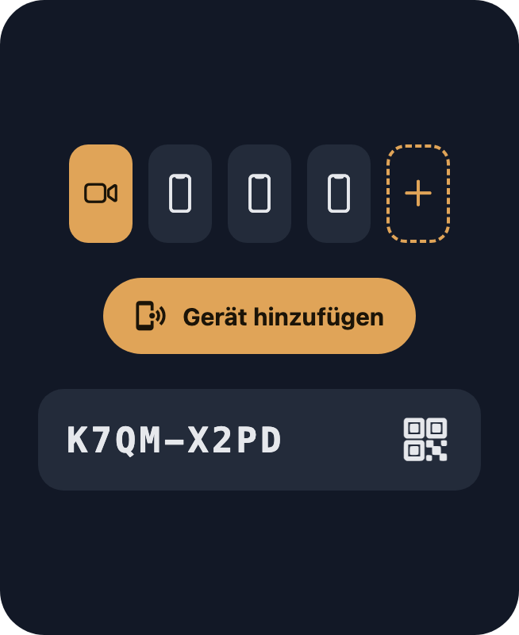

Hilfe
Fragen, Probleme oder Ideen? Schreiben Sie an babylink.support@gmail.com. Ich antworte meist innerhalb weniger Tage. Bitte nennen Sie Ihre Gerätemodelle und deren Softwareversionen.
Was Sie brauchen
- Zwei oder mehr Geräte mit BabyLink: eine Kamera und bis zu 4 Eltern-Geräte.
- Alle im selben WLAN oder im Hotspot eines der Geräte.
- Lokales Netzwerk für BabyLink auf jedem Gerät erlaubt: iPhone-Einstellungen → Datenschutz & Sicherheit → Lokales Netzwerk → BabyLink.
So geht’s






Einrichten
Wie fange ich an?
- Auf dem Gerät, das beim Baby bleibt: BabyLink öffnen, auf Kamera tippen. Es zeigt einen Code.
- Auf Ihrem Gerät: auf Eltern tippen und den Code scannen.
- Fertig. Beim nächsten Mal finden sich die Geräte von selbst.
Wohin stelle ich das Kameragerät?
Etwa 1–2 m vom Baby entfernt, außer Reichweite, mit dem ganzen Bett im Bild. Am Ladegerät lassen. Nicht unter einer Decke oder in der Sonne: Es wird warm.
Was ist „Bevor Sie gehen“?
Eine kurze Liste auf dem Kameragerät: Flugmodus mit WLAN an, Nicht stören, stumm, Ladegerät. So wecken Anrufe und Töne das Baby nicht. Mit der Taste ! öffnen Sie sie wieder.
Darf ich das Kameragerät sperren?
Mit Video: nein. Das iPhone schaltet die Kamera beim Sperren aus. Der Bildschirm wird nach 30 Sekunden von selbst dunkel, das reicht.
Mit „Nur Ton“: ja, der Ton läuft weiter.
Braucht es Internet?
Nein. Nur müssen beide Geräte im selben WLAN sein oder im Hotspot eines der beiden. Nichts verlässt Ihr Zuhause: kein Konto, kein Server.
Kann ich den Rundgang noch einmal sehen?
Ja: Tippen Sie auf ? und dann auf Rundgang starten. Er zeigt den Bildschirm der Eltern Schritt für Schritt, ohne Kamera.
Der Zuschau-Bildschirm
Was zeigt die Leiste oben?
Die Verbindung in einem Wort (Live, Schwach, Kein Video, Kein Ton, Getrennt), wie spät das Bild ist und den Akku des Kamerageräts. Tippen Sie darauf für Details.
Was sind die Tasten unten?
Von links nach rechts: Geräte · Ton · Einstellungen · Kamera · Beenden. Das ☰ oben links öffnet das Hauptmenü.
Was ist der Bogen um die Ton-Taste?
Wie laut es gerade beim Baby ist. Der kleine Pfeil zeigt, wo der Geräuschhinweis beginnt. Eine blaue Taste heißt: Der Ton ist auf diesem Gerät aus.
Was ist der Bogen um die Kamera-Taste?
Wie viel sich im Bild bewegt. Der Pfeil zeigt, wo der Bewegungshinweis beginnt. Eine blaue Taste heißt: Das Video ist aus („Nur Ton“).
Wie zoome ich?
Das Bild füllt den Bildschirm, seine Ränder gehen etwas darüber hinaus. Doppeltippen: näher; noch einmal: das ganze Bild; noch einmal: wieder bildschirmfüllend. Mit zwei Fingern zoomen, ziehen zum Verschieben. Nur das Bild hier wird vergrößert; das Kameragerät bleibt unberührt.
Kann ich beim Zuschauen andere Apps nutzen?
Ja. Wischen Sie nach oben zum Home-Bildschirm: Ein kleines Video bleibt im Vordergrund (oder tippen Sie vorher auf die Bild-in-Bild-Taste unter dem ?). Ton und Hinweise funktionieren auch bei gesperrtem Bildschirm.
Kann ich das Gerät drehen?
Ja. Bild und Karten drehen sich mit; die Tasten bleiben an ihren Rändern. Die Ausrichtungssperre im Kontrollzentrum hält alles aufrecht.
Ton und Hinweise
Warum ist kein Ton zu hören?
Der Ton ist bei jedem Start aus, damit zwei Geräte im selben Raum nicht pfeifen. Tippen Sie auf die blaue Ton-Taste, dann auf „Ton einschalten“.
Wann kommt ein Geräuschhinweis?
Wenn ein Geräusch lange genug dauert. Niedrig: lautes Weinen für 8 Sekunden. Mittel: Weinen für 5 Sekunden. Hoch: leise Geräusche für 3 Sekunden. Ändern im Ton-Menü.
Wann ertönt der Alarm?
Nur wenn Sie etwas verpasst haben könnten: Ihr Baby weint seit einer Minute und Sie haben nicht reagiert (Ton hier aus), oder BabyLink konnte etwa eine Minute lang nicht aufpassen. Er beginnt leise und wird lauter.
Wie stoppe ich den Alarm?
Bildschirm berühren, BabyLink öffnen oder die Mitteilung gedrückt halten und auf „Alarm stoppen“ tippen. Weint das Baby weiter, meldet sich BabyLink nach zwei Minuten wieder.
Was macht OK auf einer Karte?
„Ich habe es gesehen.“ Die Karte verschwindet; solange das Weinen anhält, zeigt eine kleine Zeile unter der Leiste die Zeit.
Kann ich ändern, wann der Alarm ertönt?
Im Hauptmenü (☰) unter Alarme: 30 Sekunden, 1 Minute oder 2 Minuten, und ein Schalter für jeden Alarm. Mit ausgeschaltetem Schalter kommen Vibration und Mitteilung trotzdem.
Und wenn BabyLink geschlossen wird?
Etwa eine Minute später zeigt das iPhone „BabyLink passt nicht auf“. Um ohne diese Mitteilung aufzuhören, tippen Sie auf Beenden, statt BabyLink wegzuwischen. In diesem Menü unter „Wenn BabyLink schließt“ können Sie „Mich benachrichtigen“ ausschalten; beim nächsten Start von BabyLink ist es wieder an.
Ertönt der Alarm, wenn mein Gerät stumm ist?
Ja. Er kann aber nicht lauter sein als die Lautstärke Ihres Geräts: Nachts die Lautstärke hoch lassen.
Was ist der Bewegungshinweis?
Eine Mitteilung, wenn sich eine Weile etwas bewegt. Anfangs aus. Er löst nie den Alarm aus.
Was ist das Foto in Mitteilungen?
Das letzte Bild der Kamera in Geräusch- und Bewegungsmitteilungen, auch auf dem Sperrbildschirm. Ausschalten unter Einstellungen (Zahnrad) auf dem Zuschau-Bildschirm.
Was bedeuten die blauen Hinweise?
Etwas zum Wissen, kein Alarm: Der Akku des Kamerageräts ist schwach, es ist warm, dort klingelt ein Anruf oder Mitteilungen sind aus. Rot heißt nur: BabyLink kann gerade nicht aufpassen.
Kamera steuern
Video („Nur Ton“)
Schaltet das Bild aus und lässt den Ton an. Spart Akku und hält das Kameragerät kühl. Gut für die Nacht: Im dunklen Zimmer zeigt das Bild ohnehin wenig.
Nacht
Wählen Sie, wie hell das Zimmer ist: vier Sonnen, von hell bis sehr dunkel. Je dunkler, desto heller das Bild und desto weniger flüssig die Bewegung.
Bildschirm
Schaltet den Bildschirm des Kamerageräts dunkel oder wieder an.
Licht
Die Taschenlampe des Kamerageräts, ab 1 %. BabyLink fragt vorher: Sie kann das Baby wecken.
Wenden
Rück- oder Frontkamera.
Mehr Geräte
Wie füge ich weitere Eltern hinzu?
Geräte öffnen, auf „Gerät hinzufügen“ tippen. Auf dem neuen Gerät: Eltern, dann den Code scannen oder auf „Ich habe einen Code“ tippen. Der Code gilt einmal, 10 Minuten lang. Bis zu 4 Eltern-Geräte.
Wie benenne oder entferne ich ein Gerät?
Unter Geräte: auf den Namen tippen zum Umbenennen, auf × tippen zum Entfernen. Jedes Gerät kann das.
Wie tausche ich Kamera und Eltern?
Unter Geräte auf Tauschen. Geht mit zwei Geräten. Oder einfach auf dem Home-Bildschirm des Eltern-Geräts auf Kamera tippen: Es fragt und tauscht.
Was machen Verlassen und Alle trennen?
Verlassen: Nur dieses Gerät geht, die anderen laufen weiter.
Alle trennen (auf dem Kameragerät): Alle werden getrennt. Um sie wieder zu nutzen, mit einem neuen Code koppeln.
Datenschutz und Sicherheit
Wer kann mein Baby sehen?
Nur die Geräte, die Sie gekoppelt haben. Video und Ton gehen verschlüsselt direkt von einem Gerät zum anderen über Ihr WLAN. Es gibt keinen Server und kein Konto. Nichts wird aufgezeichnet.
Ist BabyLink ein Medizinprodukt?
Nein. Es überwacht weder Atmung noch Gesundheit. Es ersetzt nicht, dass Sie selbst nach Ihrem Baby sehen.
Hilfe bei Problemen
Keine Verbindung
„Kamera wird gesucht ...“ und nichts passiert
- BabyLink auf dem Kameragerät öffnen und es entsperren.
- Sind beide Geräte im selben WLAN?
- iPhone-Einstellungen → Datenschutz & Sicherheit → Lokales Netzwerk → BabyLink: an, auf beiden Geräten.
- Immer noch nichts: Verlassen, dann mit dem Code neu koppeln.
„Verbindung verloren“
BabyLink versucht es von selbst weiter. Prüfen Sie das WLAN und ob das Kameragerät an, entsperrt und geladen ist.
Im Hotel oder Gäste-WLAN geht es nicht
Viele dieser Netze lassen Geräte nicht miteinander sprechen. Nutzen Sie den Persönlichen Hotspot eines Geräts (braucht mobile Daten) oder einen kleinen Reise-Router.
Die Leiste zeigt „Schwach“
Das WLAN ist dort langsam. Stellen Sie das Kameragerät oder den Router näher.
Kein Bild oder kein Ton
„Kameravideo gestoppt“
BabyLink auf dem Kameragerät wurde geschlossen oder das Gerät gesperrt. Öffnen Sie es dort, oder tippen Sie auf „Zu ‚Nur Ton‘ wechseln“, um weiter zuzuhören.
„Video angehalten“
Es kommt kein neues Bild an. Der Ton kann noch funktionieren. Meist kommt es von selbst zurück.
„Kein Ton von der Kamera“
Sehen Sie nach dem Kameragerät: Ist BabyLink offen, läuft ein Anruf?
„Die Kamera wurde beendet“
Jemand hat auf dem Kameragerät auf Beenden getippt. Tippen Sie auf „Kamera starten“, um sie wieder zu starten.
Ein lautes Pfeifen
Die beiden Geräte sind zu nah beieinander und der Ton ist an. Ton aus oder Abstand vergrößern.
Hinweise
Ich habe den Alarm nicht gehört
Prüfen Sie die Lautstärke Ihres Geräts. Dann iPhone-Einstellungen → Mitteilungen → BabyLink: erlaubt, mit dringlichen Mitteilungen an. Probieren Sie „Alarm testen“ im Hauptmenü (☰) unter Alarme. Prüfen Sie auch die Schalter unter Alarme.
Keine Hinweise, solange BabyLink geschlossen war
BabyLink passt nur auf, solange es läuft. Nicht wegwischen, sondern mit Beenden aufhören. Ist es geschlossen, zeigt das iPhone etwa eine Minute später „BabyLink passt nicht auf“, außer „Mich benachrichtigen“ unter „Wenn BabyLink schließt“ ist in diesem Menü aus.
Zu viele Geräuschhinweise
Stellen Sie den Geräuschhinweis im Ton-Menü auf Niedrig. Während eines Anrufs auf dem Kameragerät pausieren Geräuschhinweise von selbst.
Bewegungshinweise, wenn eine Lampe angeht
Ein plötzlicher Lichtwechsel kann wie Bewegung aussehen. Wählen Sie Niedrig oder schalten Sie den Bewegungshinweis aus.
Das Kameragerät
„Anruf auf dem Kameragerät“
Dort hat ein Anruf geklingelt; das Video kann bis zum Ende stoppen. Schalten Sie auf dem Kameragerät den Flugmodus ein, dann wieder das WLAN (siehe „Bevor Sie gehen“).
„Kameragerät ist warm“
Nehmen Sie es aus der Hülle, weg von Decken und Sonne. Mit „Nur Ton“ bleibt es kühler.
„Kamera-Akku schwach“
Der Akku des Kamerageräts ist unter 20 % und es lädt nicht. Schließen Sie es an.
Das Kameragerät wird nach einem WLAN-Wechsel nicht gefunden
Warten Sie eine Minute: Es meldet sich erneut. Immer noch nichts: Kamera dort beenden und neu starten.
Wichtig
BabyLink ist kein Medizinprodukt. Es überwacht weder Atmung noch Gesundheit, verhindert keinen plötzlichen Kindstod (SIDS) und ersetzt nicht die Aufsicht durch Erwachsene. Folgen Sie immer den Empfehlungen zum sicheren Schlaf.
Kommen Sie nicht weiter? Schreiben Sie an babylink.support@gmail.com.